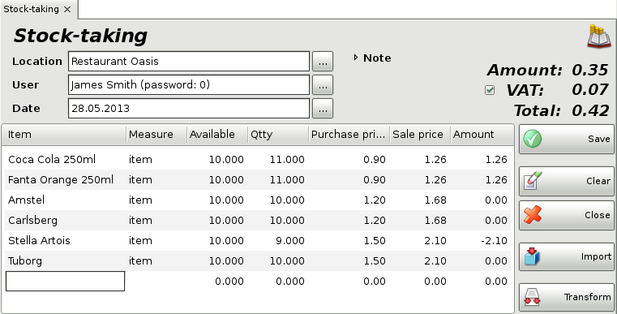
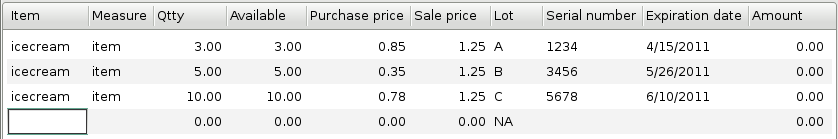
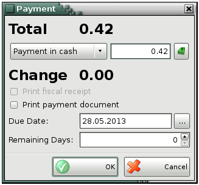

Stock-taking
To fill in the Stock-taking window (click on the  icon or use keyboard shortcut
Ctrl+J to open it) do the following:
icon or use keyboard shortcut
Ctrl+J to open it) do the following:
In the Location field fill in the name or code
of the location, in which quantities will be changed.
To select a location do
one of the following:
- use keyboard shortcut F4 in the locations
list;
- use the Enter key in the locations list;
- double-click
the location in the list;
- type the name of the location in the text
field;
- type the code of the location in the text field.
In the User field fill in the name of the
employee, who will perform the stock-taking.
To select a user do one of the
following:
- use keyboard shortcut F4 in the users list;
- use
the Enter key in the users list;
- double-click the user in the
list;
- type the user�s name in the text field;
- type the user�s code in
the text field.
In the Item field fill in the items for which
stock-taking will be performed.
To select an item do one of the
following:
- double-click the item in the list;
- type the name of the
item in the text field;
- type the code of the item in the text field;
-
type the barcode of the item in the text field.
In the Date field fill in the date of the
document.
Select the date in the Calendar window by pressing
the F4 key or by double-clicking in the text field.
You can add a note to the current operation by using Note.

If you wish to select more than one item, open the items list by pressing the F4 key, hold down the Ctrl key and click the desired items. You can select adjacent items by holding down the Shift key and using the arrow keys.
In the Qtty column fill in the current item quantities (as counted for the time being). Press Enter to move on to the Purchase price column and fill in the purchase price of the item (in case it needs to be changed). Press Enter to confirm and move on to the Sale price column and fill in the sale price of the item (in case it also needs to be changed). The application automatically fills in the Amount column. Use the same method to enter data about each item, for which stock-taking will be performed. To save the document, press the F9 key. To cancel the operation, press the Esc key.

If you are working with lots, you may visualize lot number, serial number, manufactured and expiration dates and location of each lot in the window. If you are using this method, the application will split the quantity by lots after you select an item, depending on the chosen item management in the operation settings. To change the quantity in a selected lot, enter the counted quantity in the corresponding column. To change the price, lot or item data, enter �0� in the quantity column of the corresponding lot and select the item in a new row. Enter the new values in the corresponding columns. Thus, the old lot will be replaced by the new one.
When you save the operation, the application may offer you to print stock-taking document, depending on the Print Settings.

Then you may specify the payment type and whether the document (or part of it) is paid or remains due.
�2006-2015 Microinvest, All rights reserved